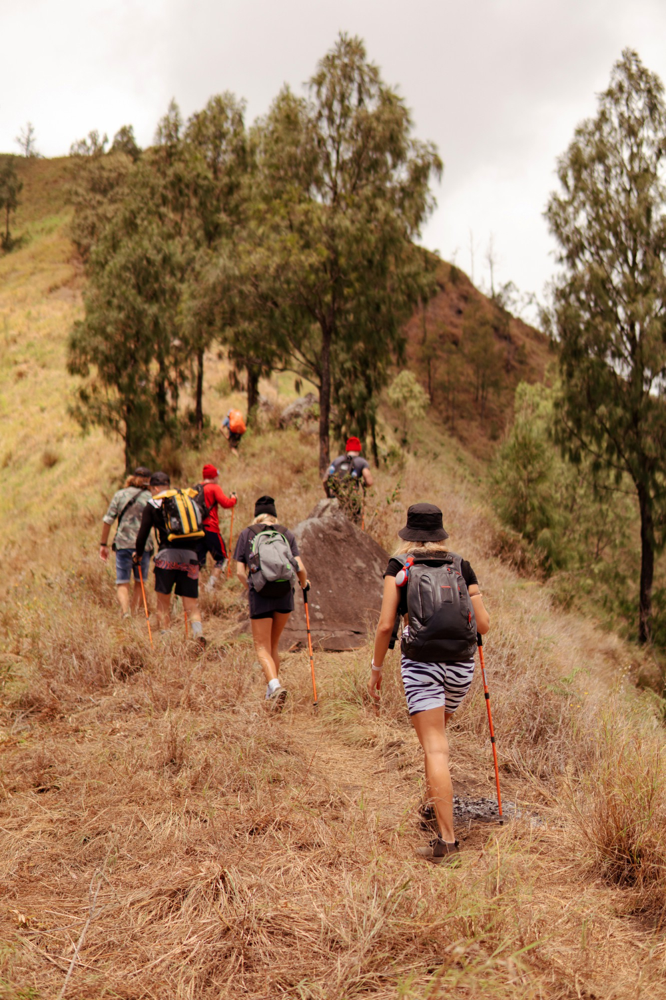

Sumérgete en la maravilla de la naturaleza y vive aventuras inolvidables con nuestras emocionantes excursiones al aire libre. Conecta con entornos naturales de una belleza espectacular y déjate cautivar por la serenidad y la grandeza de la madre naturaleza. Nuestro amplio catálogo de excursiones en la naturaleza te brinda la oportunidad de explorar bosques exuberantes, valles tranquilos, montañas majestuosas y costas vírgenes. Embárcate en una caminata por senderos sinuosos que te conducirán a cascadas cristalinas, donde podrás refrescarte y maravillarte con la energía y la fuerza del agua en pleno esplendor. Si eres un amante de la adrenalina, puedes aventurarte en emocionantes recorridos en bicicleta de montaña, desafiando terrenos accidentados y disfrutando de la emoción de la velocidad y la destreza en cada curva. ¿Prefieres explorar el medio acuático? Nuestras excursiones en kayak te llevarán a través de ríos serenos y lagos tranquilos, donde podrás deleitarte con la paz y la belleza de la naturaleza circundante. Descubre ecosistemas acuáticos vibrantes, observa aves y vida silvestre en su hábitat natural y sumérgete en un mundo acuático lleno de sorpresas. Si buscas una experiencia más relajante, nuestras excursiones en la naturaleza también incluyen paseos en barco por lagos y fiordos, donde podrás contemplar panoramas impresionantes y maravillarte con la grandeza de la geografía local. Disfruta de la brisa marina, el sol en tu rostro y la tranquilidad del entorno mientras te sumerges en la magia de la naturaleza. Tanto si eres un aventurero experimentado en busca de desafíos estimulantes como si simplemente deseas relajarte y conectar con la naturaleza, nuestras excursiones en la naturaleza están diseñadas para satisfacer todos los gustos y niveles de experiencia. Nuestros guías expertos te acompañarán en cada paso del camino, brindándote información interesante sobre la flora, la fauna y la historia del lugar. ¡Prepárate para vivir momentos de asombro, inspiración y conexión con la naturaleza en nuestras apasionantes excursiones al aire libre! Explora nuevos horizontes, descubre paisajes impresionantes y crea recuerdos inolvidables en cada paso de tu viaje.
Excursiones
Visitas Guiadas
Explora la riqueza cultural e histórica de destinos fascinantes con nuestras visitas guiadas. Descubre los tesoros ocultos de ciudades emblemáticas de la mano de nuestros expertos guías. Maravíllate con monumentos icónicos y rincones pintorescos mientras te adentras en la historia y la cultura de cada lugar. Recorre famosos sitios arqueológicos para contemplar las ruinas de antiguas civilizaciones y admira la arquitectura milenaria de templos y ciudades abandonadas. Nuestras visitas a museos y galerías te brindan la oportunidad de descubrir obras maestras de renombrados artistas y conocer su historia. Explora cascos históricos con calles empedradas, plazas encantadoras y edificios centenarios que guardan siglos de historia. Conoce las leyendas locales, disfruta de la arquitectura única y sumérgete en la atmósfera especial de cada lugar. Si deseas conectarte con la naturaleza, nuestras visitas a parques naturales te transportan a paisajes impresionantes donde podrás observar la vida silvestre y aprender sobre conservación. Descubre la historia, el arte, los sitios arqueológicos y la naturaleza a través de nuestras visitas guiadas. Aprovecha el conocimiento y la pasión de nuestros guías para sumergirte en los encantos de cada destino. Prepárate para vivir experiencias únicas y descubrir los secretos mejor guardados en nuestras emocionantes visitas. Explora el pasado, maravíllate con el presente y déjate inspirar por la belleza y cultura que te esperan en cada destino.
Salidas Organizadas
Embárcate en emocionantes salidas organizadas y descubre destinos cautivadores de la mano de nuestros expertos guías. Nuestras salidas organizadas te brindan la oportunidad de explorar lugares impresionantes de forma cómoda y bien planificada. Desde aventuras en la naturaleza hasta recorridos culturales, nuestras salidas organizadas te permiten sumergirte en lo mejor que cada destino tiene para ofrecer. Admira la majestuosidad de paisajes naturales asombrosos, como montañas imponentes, cascadas cristalinas y bosques exuberantes. Descubre la vida silvestre en su hábitat natural mientras te aventuras en safaris emocionantes o expediciones de avistamiento de aves. Sumérgete en la historia y la arquitectura de antiguas ciudades y sitios arqueológicos fascinantes. Explora ruinas milenarias, templos místicos y fortalezas imponentes que cuentan historias de épocas pasadas. Déjate sorprender por la diversidad cultural al participar en festivales vibrantes y descubrir tradiciones locales únicas. Disfruta de actividades al aire libre, como senderismo, ciclismo y deportes acuáticos, que te permiten conectar con la naturaleza y vivir momentos de adrenalina. En nuestras salidas organizadas, nos encargamos de todos los detalles para que tú puedas disfrutar al máximo. Desde el transporte y el alojamiento hasta las actividades y las comidas, nos aseguramos de que tu experiencia sea fluida y placentera. Conéctate con otros viajeros apasionados y comparte momentos inolvidables mientras exploras nuevos horizontes. No importa si viajas solo, en pareja, con amigos o en familia, nuestras salidas organizadas están diseñadas para ofrecerte una experiencia enriquecedora y llena de aventuras. Prepara tu equipaje y únete a nosotros en nuestras emocionantes salidas organizadas para descubrir el mundo en toda su magnificencia.